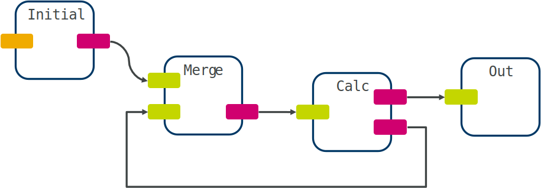

Cookbook#
I want to create a…
Simple linear workflow#
We will create a simple workflow that just reads some data, processes it, and logs the result. First, import the required nodes and modules:
from maize.core.workflow import Workflow
from maize.steps.io import LoadData, LogResult
from maize.steps.your_module import YourNode
Then construct your workflow by instantiating a Workflow object and adding nodes:
flow = Workflow(name="example")
load = flow.add(LoadData[int], parameters={"data": 17})
my_node = flow.add(YourNode, parameters={"param": False})
result = flow.add(LogResult)
Now connect them together:
flow.connect(load.out, my_node.inp)
flow.connect(my_node.out, result.inp)
Finally check everything’s okay and run!
flow.check()
flow.execute()
You should see the result being written to the log.
Cyclic workflow#
Cyclic workflows often appear whenever we want to iteratively improve a solution until a certain threshold has been reached. The general outline for such a workflow will look like this:
This means that the node labelled Calc will return only once the final solution has been produced and sent off to the final node. It is further important that Calc runs in a loop (e.g. by using loop()) to allow continuous processing. To build this workflow in maize, instantiate your workflow and add the required nodes as normal:
from maize.core.workflow import Workflow
from maize.steps.io import LoadData, LogResult
from maize.steps.plumbing import Merge
flow = Workflow(name="cycle")
load = flow.add(LoadData[int], parameters={"data": 17})
merge = flow.add(Merge[int])
calc = flow.add(Calc)
result = flow.add(LogResult)
We can now connect everything together analogously to the diagram above:
flow.connect_all(
(load.out, merge.inp),
(merge.out, calc.inp),
(calc.out, merge.inp),
(calc.out_final, result.inp)
)
Note that although it appears like we are connecting two nodes to the same input, the input in Merge is a MultiInput, which means that it will create additional ports as necessary.
Conditionally branched workflow#
Remember that in maize, all nodes are constantly running as their own process, no matter if they have data to process or not. This makes branched workflows easy to implement: We only need to output data to the corresponding port. Here’s an example node definition:
from maize.core.node import Node
from maize.core.interface import Input, Output
class Condition(Node):
inp: Input[int] = Input()
out_a: Output[int] = Output()
out_b: Output[int] = Output()
def run(self) -> None:
data = self.inp.receive()
if data < 10:
self.out_a.send(data)
else:
self.out_b.send(data)
You can of course optionally wrap this in a loop (using loop()) and also define the condition for branching using a Parameter or even using another input. Creating the workflow can now be done as before:
from maize.core.workflow import Workflow
from maize.steps.io import LoadData, LogResult
flow = Workflow(name="cycle")
load = flow.add(LoadData[int], parameters={"data": 17})
cond = flow.add(Condition)
out_a = flow.add(LogResult, name="out_a")
out_b = flow.add(LogResult, name="out_b")
flow.connect_all(
(load.out, cond.inp),
(cond.out_a, out_a.inp),
(cond.out_b, out_b.inp)
)
Pass a result back to python#
We can use the special Return node to transfer a value back to the main process. This can be useful if you want to incorporate a workflow into an existing python script without having to save and load from a file. All you need to do is call get() after workflow execution:
from maize.core.workflow import Workflow
from maize.steps.io import LoadData, Return
flow = Workflow(name="example")
load = flow.add(LoadData[int], parameters={"data": 17})
result = flow.add(Return[int])
flow.connect(load.out, result.inp)
flow.check()
flow.execute()
res = result.get()
# 17
Workflow with load balancing#
Using nodes from the plumbing module allows to distribute data over multiple nodes. We assume our data arrives in the form of a sequence of items that should be split across nodes and then collected together again at the end. We’ll use Delay nodes to emulate our workers:
from maize.core.workflow import Workflow
from maize.steps.io import LoadData, LogResult
from maize.steps.plumbing import Scatter, Accumulate, RoundRobin, Merge, Delay
flow = Workflow(name="balance")
load = flow.add(LoadData, parameters={"data": ["a", "b", "c"]})
# Decomposes our list into items and sends them separately
scatter = flow.add(Scatter[str])
# Sends each item it receives to a different output
bal = flow.add(RoundRobin[str], name="bal")
# Our processing nodes
worker1 = flow.add(Delay[str], name="worker1")
worker2 = flow.add(Delay[str], name="worker2")
worker3 = flow.add(Delay[str], name="worker3")
# Merges multiple inputs into one output
merge = flow.add(Merge[str])
# Accumulate multiple items into one list
accu = flow.add(Accumulate[str], parameters={"n_packets": 3})
out = flow.add(LogResult)
flow.connect_all(
(load.out, scatter.inp),
(scatter.out, bal.inp),
(bal.out, worker1.inp),
(bal.out, worker2.inp),
(bal.out, worker3.inp),
(worker1.out, merge.inp),
(worker2.out, merge.inp),
(worker3.out, merge.inp),
(merge.out, accu.inp),
(accu.out, out.inp)
)
Alternatively, you can make use of the parallel() macro to automate this sometimes tedious procedure:
from maize.utilities.macros import parallel
from maize.core.workflow import Workflow
from maize.steps.io import LoadData, LogResult
from maize.steps.plumbing import Scatter, Accumulate, RoundRobin, Merge, Delay
flow = Workflow(name="balance")
load = flow.add(LoadData, parameters={"data": ["a", "b", "c"]})
# Decomposes our list into items and sends them separately
scatter = flow.add(Scatter[str])
# Apply our macro
worker_subgraph = flow.add(parallel(Delay[str], n_branches=3))
# Accumulate multiple items into one list
accu = flow.add(Accumulate[str], parameters={"n_packets": 3})
out = flow.add(LogResult)
flow.connect_all(
(load.out, scatter.inp),
(scatter.out, worker_subgraph.inp),
(worker_subgraph.out, accu.inp),
(accu.out, out.inp)
)
Workflow as a script#
We can make a workflow callable on the commandline as a normal script by using the setup_workflow() function and exposing workflow parameters using map():
from maize.core.workflow import Workflow
from maize.utilities.io import setup_workflow
from maize.steps.io import LoadData, LogResult
from maize.steps.your_module import YourNode
if __name__ == "__main__":
flow = Workflow(name="example")
load = flow.add(LoadData[int], parameters={"data": 17})
my_node = flow.add(YourNode, parameters={"param": False})
result = flow.add(LogResult)
flow.connect(load.out, my_node.inp)
flow.connect(my_node.out, result.inp)
flow.map(load.data, my_node.param)
setup_workflow(flow)
You will now have a workflow that behaves as a normal script, with a help message listing all maize and workflow-specific parameters (using -h or --help).
Workflow with ultra-high throughput#
You may sometimes run into situations where you have a very large amount of individual datapoints to send through a workflow. For instance, you might have a simple docking workflow and want to dock 100000 SMILES codes in one go. For some machines, this naive implementation might actually work:
from pathlib import Path
from maize.core.workflow import Workflow
from maize.steps.io import Return, Void
from maize.steps.mai.docking import AutoDockGPU
from maize.steps.mai.molecule import LoadSmiles, Smiles2Molecules
flow = Workflow(name="vina")
smi = flow.add(LoadSmiles)
gyp = flow.add(Smiles2Molecules)
adg = flow.add(AutoDockGPU)
sco = flow.add(Return[list[float]], name="scores")
log = flow.add(Void)
smi.path.set(Path("smiles-100k.smi"))
adg.grid_file.set(Path("grid/rec.maps.fld"))
adg.scores_only.set(True)
adg.strict.set(False)
flow.connect_all(
(smi.out, gyp.inp),
(gyp.out, adg.inp),
(adg.out, log.inp),
(adg.out_scores, sco.inp),
)
flow.check()
flow.execute()
Here, 100000 SMILES will be loaded and sent to the embedding and docking steps at once. This can cause memory issues with the channels and possibly the backend software that you’re using. It is also inefficient as docking will have to wait for all molecules to be embedded before it can start docking. A simple solution is to split the data into chunks and send these individual batches to looped variants of the inner processing nodes. This can be accomplished with Batch and Combine:
from pathlib import Path
from maize.core.workflow import Workflow
from maize.steps.io import Return, Void
from maize.steps.plumbing import Batch, Combine
from maize.steps.mai.docking import AutoDockGPU
from maize.steps.mai.molecule import LoadSmiles, Smiles2Molecules
flow = Workflow(name="vina")
smi = flow.add(LoadSmiles)
# Split the data into batches
bat = flow.add(Batch[str])
# Important: You must specify looped execution for the inner nodes!
gyp = flow.add(Smiles2Molecules, loop=True)
adg = flow.add(AutoDockGPU, loop=True)
# Reassemble original data shape
com = flow.add(Combine[NDArray[np.float32]])
sco = flow.add(Return[list[float]], name="scores")
log = flow.add(Void)
smi.path.set(Path("smiles-100k.smi"))
adg.grid_file.set(Path("grid/rec.maps.fld"))
adg.scores_only.set(True)
adg.strict.set(False)
flow.connect_all(
(smi.out, bat.inp),
(bat.out, gyp.inp),
(gyp.out, adg.inp),
(adg.out, log.inp),
(adg.out_scores, com.inp),
(com.out, sco.inp)
)
# This is the number of batches we will use
n_batches = flow.combine_parameters(bat.n_batches, com.n_batches)
n_batches.set(100)
flow.check()
flow.execute()
The embedding and docking steps will now only receive batches of 100 molecules at a time, avoiding potential memory issues and allowing parallel execution of embedding and docking. This technique can be easily combined with load balancing.